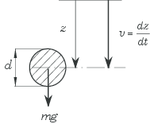
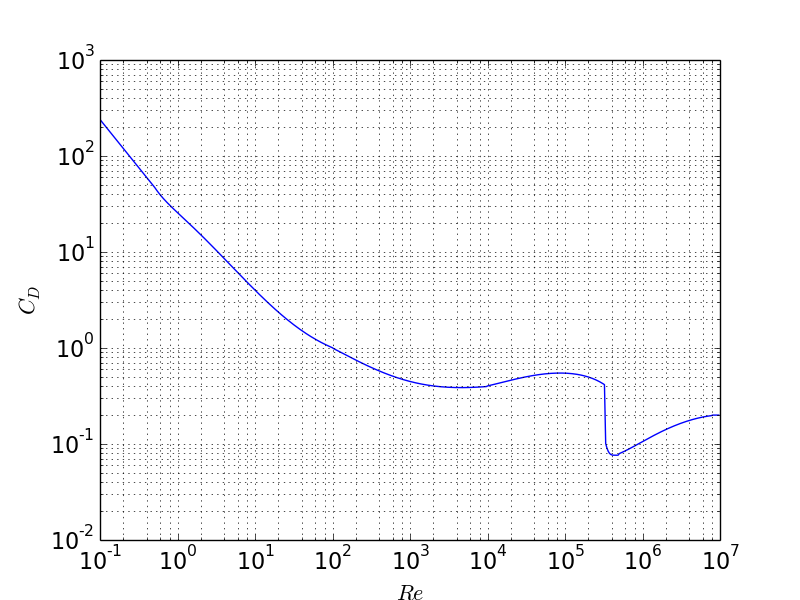

Figure 1: Falling sphere.

The figure shows a falling sphere with a diameter \( d \) and mass \( m \) that falls vertically in a fluid. Use of Newton's 2nd law in the \( z \)-direction gives $$ \begin{equation}\label{eq:newton_2nd_sphere} m\frac{dv}{dt} = mg-m_fg-\frac{1}{2}m_f\frac{dv}{dt}-\frac{1}{2}\rho_fv\left|v\right|A_kC_D, \end{equation} $$ where the different terms are interpreted as follows: \( m=\rho_k V \), where \( \rho_f \) is the density of the sphere and \( V \) is its volume, is the mass of the sphere. \( m_f=\rho_f V \), where \( \rho_f \) is the density of the fluid, is the mass of the displaced fluid. \( m_fg= \) is the buoyancy. \( C_D \) is the drag coefficient. \( A_k \) is the area projection of the sphere \( = \frac{\pi}{4}d^2 \). \( \frac{1}{2}m_f \) is the hydrodynamical mass (added mass). The expression for the hydrodynamical mass is derived in White [1], page 539-540.
We introduce the following abbreviations: $$ \begin{equation} \rho=\frac{\rho_f}{\rho_k},\ A=1+\frac{\rho}{2}, \ B=(1-\rho)g,\ C=\frac{3\rho}{4d}. \end{equation} $$ Equation \eqref{eq:newton_2nd_sphere} may then be written as $$ \begin{equation} \label{eq:sphere_1st_order} \frac{dv}{dt}=\frac{1}{A}(B-C\cdot v\left|v\right|C_d). \end{equation} $$ \( C_D \) is found experimentally as a function of the Reynolds number \( R_e = \frac{vd}{\nu} \), where \( \nu \) is the kinematical viscosity.
Figure 2 shows \( C_D \) as a function of \( Re \). The Python programme CDsphere.py produces the plot from a curve fit to the data of Evett and Liu [2]. The programme uses a function CDsphere which is shown at the end of this example. The values in the plot are not as accurate as the number of digits in the programme might indicate. For example is the location and the size of the "valley" in the diagram strongly dependent of the degree of turbulence in the free stream and the roughness of the sphere.
In air we may often neglect the buoyancy term and the hydrodynamical mass. This should not be done for a liquid.
Introducing \( v=\frac{dz}{dt} \) in Equation \eqref{eq:sphere_1st_order}, we get a 2nd order ODE as follows $$ \begin{equation}\label{eq:sphere_second_order} \frac{d^2z}{dt^2}=\frac{1}{A}\left(B-C\cdot \frac{dz}{dt}\bigg|\frac{dz}{dt}\bigg|C_d\right) \end{equation} $$ For Equation \eqref{eq:sphere_second_order} two initial conditions must be specified, e.g. \( v=v_0 \) and \( z=z_0 \) for \( t=0 \).
Figure 2: Drag coefficient \( C_D \) as function of the Reynold's number \( R_e \).

def cd_sphere(Re):
"Computes the drag coefficient of a sphere as a function of the Reynolds number Re."
# Curve fitted after fig . A -56 in Evett & Liu :% " Fluid Mechanics & Hydraulics ",
# Schaum ' s Solved Problems McGraw - Hill 1989.
from numpy import log10, array, polyval
if Re <= 0.0:
CD = 0.0
elif Re > 8.0e6:
CD = 0.2
elif Re > 0.0 and Re <= 0.5:
CD = 24.0/Re
elif Re > 0.5 and Re <= 100.0:
p = array([4.22, -14.05, 34.87, 0.658])
CD = polyval(p, 1.0/Re)
elif Re > 100.0 and Re <= 1.0e4:
p = array([-30.41, 43.72, -17.08, 2.41])
CD = polyval(p, 1.0/log10(Re))
elif Re > 1.0e4 and Re <= 3.35e5:
p = array([-0.1584, 2.031, -8.472, 11.932])
CD = polyval(p, log10(Re))
elif Re > 3.35e5 and Re <= 5.0e5:
x1 = log10(Re/4.5e5)
CD = 91.08*x1**4 + 0.0764
else:
p = array([-0.06338, 1.1905, -7.332, 14.93])
CD = polyval(p, log10(Re))
return CD
When solving numerical problems variables are often not single numbers, but arrays containing many numbers. The function CDsphere above takes a single number in and gives a single number out. For computationally intensive algorithms where variables are stored in arrays this is inconvenient and time consuming. It is therefore of interest to implement functions that can take in arrays and output arrays in an efficient manner. This may be done in a variaty of ways. Some possibilities are presented in the following, and, as we shall see, some are more time consuming than others.
A simple extension of the single-valued function above is as follows:
def cd_sphere_py_vector(ReNrs):
CD = zeros_like(ReNrs)
counter = 0
for Re in ReNrs:
CD[counter] = cd_sphere(Re)
counter += 1
return CD
The new function cd_sphere_py_vector takes in an array ReNrs and calculates the drag coefficient for each element using the previous function cd_sphere. This does the job, but is not very efficient.
A second version is implemented in the function cd_sphere_vector. This function takes in the array Re and calculates the drag coefficient of all elements by multiple calls of the function numpy.where; one call for each condition, similarily as each if statement in the function cd_sphere. The function is shown here:
def cd_sphere_vector(Re):
from numpy import log10,array,polyval,where,zeros_like
CD = zeros_like(Re)
CD = where(Re<0,0.0,CD) # condition 1
CD = where((Re > 0.0) & (Re <=0.5),24/Re,CD) # condition 2
p = array([4.22,-14.05,34.87,0.658])
CD = where((Re > 0.5) & (Re <=100.0),polyval(p,1.0/Re),CD) #condition 3
p = array([-30.41,43.72,-17.08,2.41])
CD = where((Re >100.0) & (Re <=1.0e4) ,polyval(p,1.0/log10(Re)),CD) #condition 4
p = array([-0.1584,2.031,-8.472,11.932])
CD = where((Re > 1.0e4) & (Re <=3.35e5),polyval(p,log10(Re)),CD) #condition 5
CD = where((Re > 3.35e5) & (Re <=5.0e5),91.08*(log10(Re/4.5e5))**4 + 0.0764,CD) #condition 6
p = array([-0.06338,1.1905,-7.332,14.93])
CD = where((Re > 5.05e5) & (Re <=8.0e6),polyval(p,log10(Re)),CD) #condition 7
CD = where(Re>8.0e6,0.2,CD) # condition 8
return CD
A third approach we will try is using boolean type variables. The 8 variables condition1 through condition8 in the function cd_sphere_vector_bool are boolean variables of the same size and shape as Re. The elements of the boolean variables evaluate to either True or False, depending on if the corresponding element in Re satisfy the condition the variable is assigned.
def cd_sphere_vector_bool(Re):
from numpy import log10,array,polyval,zeros_like
condition1 = Re < 0
condition2 = logical_and(0 < Re, Re <= 0.5)
condition3 = logical_and(0.5 < Re, Re <= 100.0)
condition4 = logical_and(100.0 < Re, Re <= 1.0e4)
condition5 = logical_and(1.0e4 < Re, Re <= 3.35e5)
condition6 = logical_and(3.35e5< Re, Re <= 5.0e5)
condition7 = logical_and(5.0e5 < Re, Re <= 8.0e6)
condition8 = Re > 8.0e6
CD = zeros_like(Re)
CD[condition1] = 0.0
CD[condition2] = 24/Re[condition2]
p = array([4.22,-14.05,34.87,0.658])
CD[condition3] = polyval(p,1.0/Re[condition3])
p = array([-30.41,43.72,-17.08,2.41])
CD[condition4] = polyval(p,1.0/log10(Re[condition4]))
p = array([-0.1584,2.031,-8.472,11.932])
CD[condition5] = polyval(p,log10(Re[condition5]))
CD[condition6] = 91.08*(log10(Re[condition6]/4.5e5))**4 + 0.0764
p = array([-0.06338,1.1905,-7.332,14.93])
CD[condition7] = polyval(p,log10(Re[condition7]))
CD[condition8] = 0.2
return CD
Lastly, the built-in function vectorize is used to automatically generate a vector-version of the function cd_sphere, as follows:
cd_sphere_auto_vector=vectorize(cd_sphere)
Using the function clock in the module time, the cpu-time for each of the array-type functions described above has been measured for a test example. An array with 500 elements was sent to the functions.
cd_sphere_vector_bool execution time = 0.000312
cd_sphere_vector execution time = 0.000641
cd_sphere_auto_vector execution time = 0.009497
cd_sphere_py_vector execution time = 0.010144
As seen, the function with the boolean variables was fastest. The simple vectorized version of the original function was much slower, and the built-in function vectorize was nearly as inefficient.